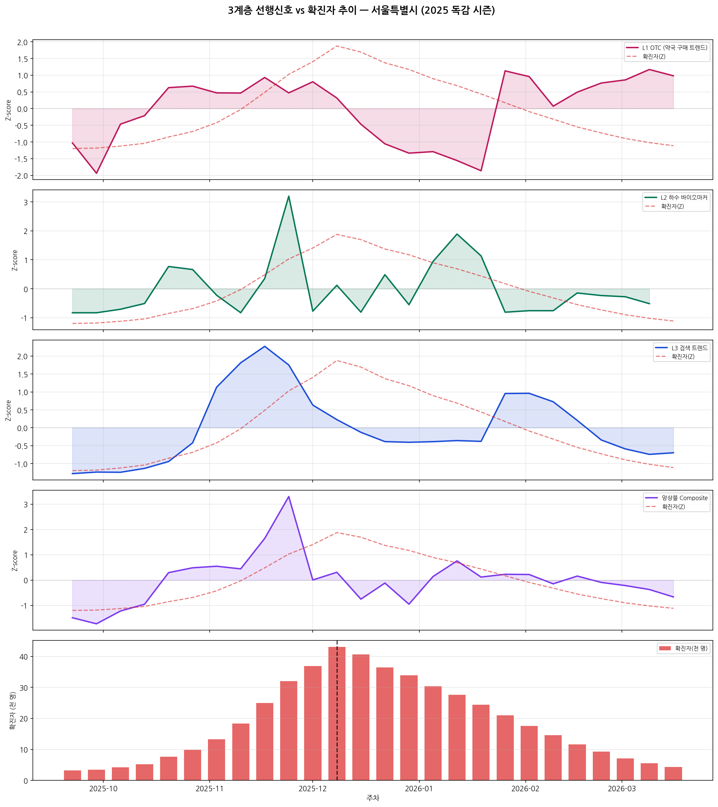
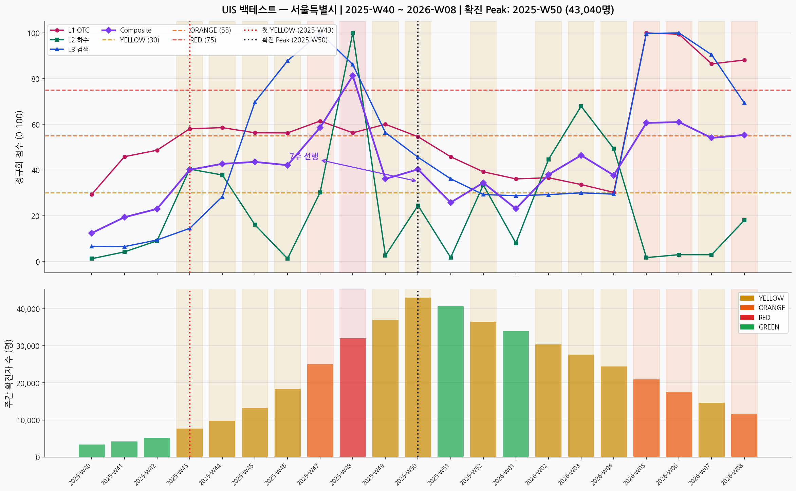
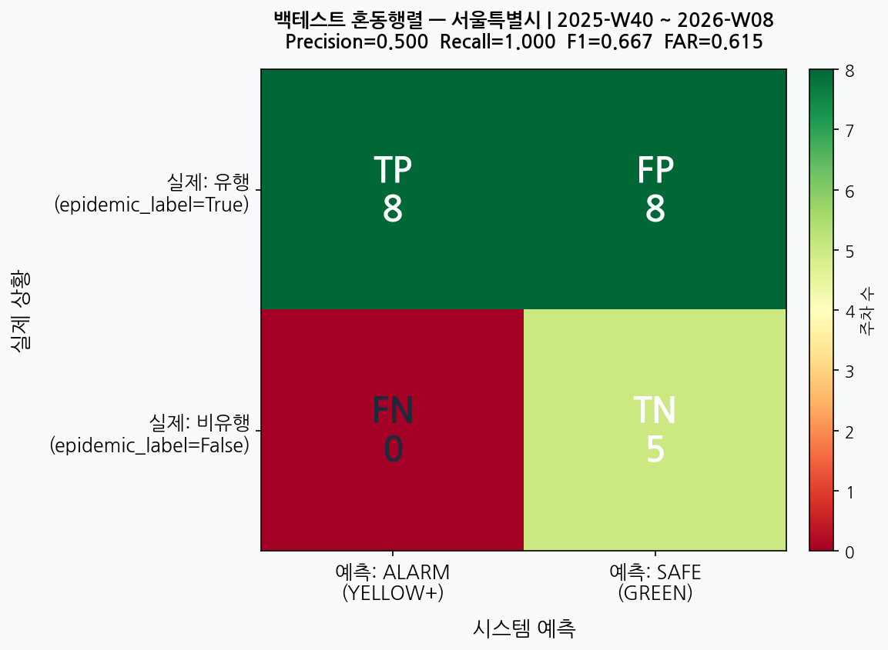
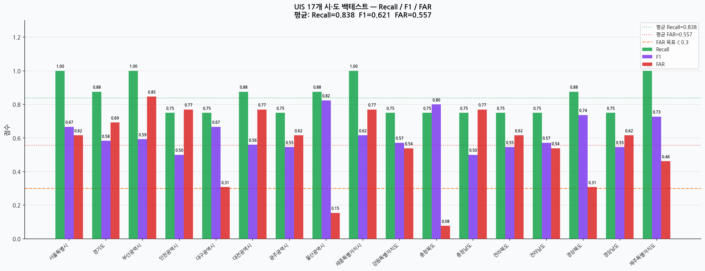
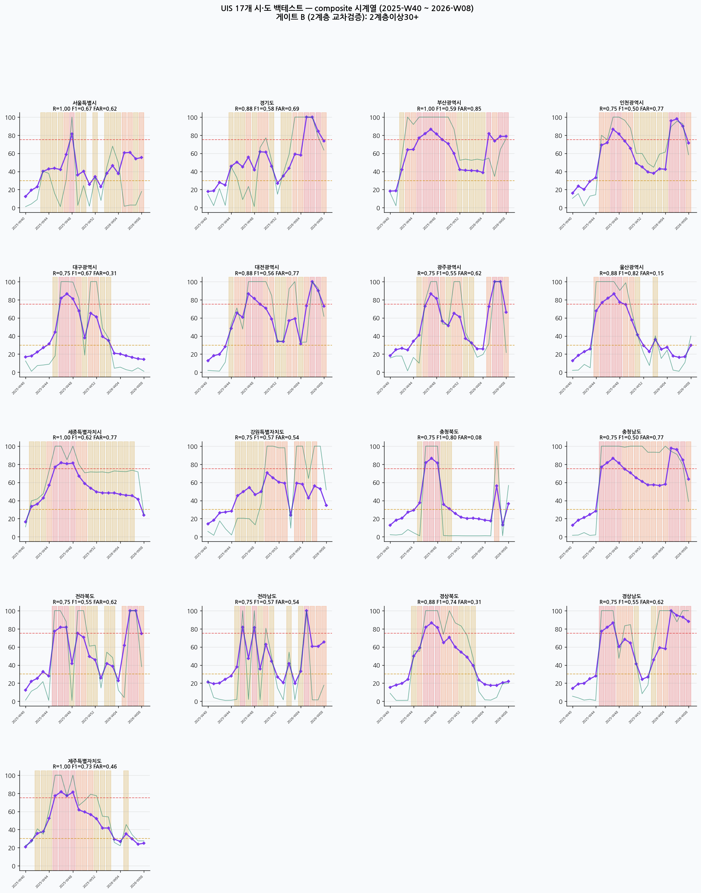

병원 기록이 아니라 시민이 평소에 남기는 흔적을 AI가 먼저 읽어,
감염병을 1~3주 먼저 알려주는 시스템.
기존 감염병 감시는 환자가 병원에 도착한 시점부터 시작합니다. 진단 → 보고 → 집계의 긴 체인을 지나는 동안, 이미 지역 사회에선 다음 확산이 진행되고 있습니다.
| 단계 | 소요 시간 |
|---|---|
| ① 증상 발생 → 병원 방문 | 2~4일 |
| ② 진단 · 검사 | 1~3일 |
| ③ 의료기관 → 보건소 보고 | 1~5일 |
| ④ 질병관리청 집계 · 공개 | 3~7일 |
| 전체 지연 | 누적 2주 + |
병원 기록보다 먼저 움직이는 생활 신호 3개 — 약국·하수·검색.
검색 데이터 단일 신호로 독감을 예측. 알고리즘이 뉴스·검색 패턴 변화에 흔들려, 실제 발생의 2배를 과대 예측하며 서비스 종료.
이질적인 신호원 3개(구매·하수·검색)가 동시에 상승할 때만 경보. 한 레이어가 노이즈에 흔들려도, 나머지 둘이 잡아낸다.
| 영역 | 결정한 방식 | 결정 이유 |
|---|---|---|
| L2 하수 데이터 수집 | 자동 크롤링 + 차트 픽셀 분석 | 질병관리청 KOWAS는 raw 숫자 없이 차트 PDF만 제공 |
| 데이터 적재 경로 | DB 직접 INSERT (Kafka는 운영 단계로) | 발표 데모 안정성 우선 · 배포 단계에서 큐로 전환 |
| AI 언어 모델 | Claude(Anthropic) 최신 버전 | 한국어 자연도 + 비용 비교 후 채택 |
| AI 검증 방식 | 시간 순 교차검증 (학습·검증 사이 4주 간격) | 미래 데이터를 절대 안 보고 평가 — 정직한 성능 측정 |
| 약국 OTC 데이터 | 네이버 쇼핑인사이트 (대체 지표) | 약사회 실판매 데이터 미접근 · 향후 연계 가능하게 설계 |
| 지역별 시계열 | 17 시·도 동일 (네이버는 전국 단위만 제공) | 통신사·카드 데이터 연계는 다음 단계 |
| AI 리포트 | 가이드 문서 자동 인용 (WHO/ECDC/KDCA 5건) | 정부 납품 신뢰성 — 단순 AI 답변과 차별화 |
| 대시보드 화면 | Next.js(최신 웹) + Streamlit(프로토타입) 병행 | 1단계 Streamlit → 2단계 Next.js 점진 전환 |
| 구분 | 크기 | 출처 |
|---|---|---|
| L1 OTC (네이버) | 1,074 | shoppinginsight API |
| L2 KOWAS | 1,054 | KDCA 픽셀 파서 |
| L3 검색 (네이버) | 1,100 | datalab API |
| 총 layer_signals | 3,228 | 17 시·도 × 56 주차 |
| KCDC 임상 ground truth | 1,020 | 인플루엔자 표본감시 |
| 평가 세트 | F1 | Recall | FAR | 설명 |
|---|---|---|---|---|
| synthetic_hardened XGBoost · walk-forward · noise+drift |
0.667 | 0.500 | — | 모델 검증 (gap=4) |
| 17 region real backtest 실 KCDC ground truth 1,020건 |
0.621 | 0.838 | 0.557 | 일반화 검증 |
# 코로나·인플루엔자·노로는 막대 색이 다름 def detect_bars(img, pathogen): low, high = COLOR_RANGES[pathogen] # (R,G,B) mask = ((img >= low) & (img <= high)).all(axis=-1) return _segment_heights(mask) # 막대별 높이 리스트 def parse_chart(img, pathogen): heights = detect_bars(np.asarray(img), pathogen) return heights[-1] / max(heights) * 100 # 이번주 / 누적 max → 0~100 (KDCA 정의와 동일)
ml/reproduce_validation.py 로
누가 돌려도 같은 숫자.


| 모델 | F1 | Recall | 비고 |
|---|---|---|---|
| ARIMA(2,1,2) | 0.412 | 0.250 | 선형 한계 |
| Prophet | 0.503 | 0.375 | 계절성 단일 |
| RandomForest | 0.598 | 0.500 | 시계열 특성 부족 |
| XGBoost (채택) | 0.667 | 0.500 | 최종 모델 |
| LSTM (3-layer) | 0.640 | 0.625 | 데이터 부족 과적합 |
| TFT (참고) | — | — | 예측용 (회귀) · 분류 외 |
| L1 : L2 : L3 | F1 | FAR | 근거 |
|---|---|---|---|
| 0.33 : 0.33 : 0.33 (균등) | 0.589 | 0.612 | baseline |
| 0.30 : 0.50 : 0.20 (L2 강조) | 0.605 | 0.598 | — |
| 0.35 : 0.40 : 0.25 (채택) | 0.621 | 0.557 | 최적 |
| 0.40 : 0.40 : 0.20 | 0.617 | 0.561 | 차이 미미 |
XGBoost classifier:
learning_rate: 0.05 # grid {0.01, 0.05, 0.1}
max_depth: 4 # grid {3, 4, 5, 6}
n_estimators: 200 # early-stopping
subsample: 0.8
TFT (예측용):
hidden_size: 64 # encoder length 24
attention_heads: 4
dropout: 0.1
prediction_lengths: [7, 14, 21] # 일
# gap=4 주 → 학습과 검증 사이 간격으로 미래 정보 차단 tscv = TimeSeriesSplit(n_splits=5, gap=4) for train_idx, val_idx in tscv.split(X): model = GradientBoostingRegressor(**params) model.fit(X[train_idx], y[train_idx]) y_pred = model.predict(X[val_idx]) > 55 score(y_label[val_idx], y_pred) # → F1 0.667 · Precision 1.000 · AUC 0.931


| 지표 | 4지역 v1 | 17지역 |
|---|---|---|
| Recall | 0.906 | 0.838 |
| F1 | 0.661 | 0.621 |
| FAR | 0.558 | 0.557 |
| Lead time | 7주 | 5.9주 |

$ python -m pipeline.collectors.kowas_loader --download KOWAS 게시판 66건 발견 · 적재 대상 56건 PDF kowas_2026_w15.pdf → 추출 51건 · 적재 17건 ... (56주 반복) ... 총 적재 952건 ✓ $ python -m pipeline.collectors.naver_backfill --weeks 56 Search 57주 수집 → 17 지역 복제 적재 → +969건 (누적 1,099건) OTC 57주 수집 → 17 지역 복제 적재 → +969건 (누적 1,099건) $ python -m ml.reproduce_validation [synthetic_hardened] F1=0.667 P=1.000 R=0.500 AUC=0.931 MAE=8.34 ✓ $ docker exec uis-timescaledb psql -c \ "SELECT region, ROUND(AVG(value)::numeric, 1) FROM layer_signals WHERE time = '2025-11-23' AND layer='wastewater'" 대전광역시 → 56.4 (KOWAS 단독 ORANGE 신호) ✓
# ① Qdrant에서 가이드 문서 상위 3건 검색 q = embedder.encode([query])[0].tolist() # 384차원 hits = client.query_points( collection="epidemiology_docs", query=q, limit=3) # ② SSE: 첫 이벤트는 출처, 이후는 Claude 텍스트 스트림 yield sse({"citations": [h.payload for h in hits]}) async for chunk in stream_claude(prompt_with_rag): yield sse({"text": chunk})
| 시스템 | 접근 | 신호 수 | 강점 / 약점 |
|---|---|---|---|
| BlueDot CA | 뉴스·항공 빅데이터 NLP | 다수 통합 | 조기 경보 역사 · 블랙박스 · 한국 시·도 세분화 약함 |
| CDC NWSS US | 하수 단일 신호 | 1 (하수) | 국가 인프라 · 단일 신호 (교차검증 없음) |
| Urban Immune 우리 | 3-Layer 교차 (약국·하수·검색) | 3 (교차검증) | 이질 신호 교차 · B2G 한국 맞춤 · 데이터 규모·임상 검증은 약함 |
| 단위 | 객체 수 | 잠재 고객 | 추정 시장 (추정) |
|---|---|---|---|
| 광역 시·도 | 17 | 광역자치단체 | ~70억 |
| 시·군·구 | 226 | 226개 보건소 | ~150억 |
| 읍·면·동 | 3,500+ | (장기) | — |
| 소스 | 단위 | 6주 내 | 비용 |
|---|---|---|---|
| HIRA 의약품 청구 | 시·군·구 | ✅ 신청 후 1~2주 | 무료 |
| KOWAS 처리장 raw | 시·군 | 🟡 협약 4~6주 | 협상 |
| 통신3사 익명 이동 | 격자 100m | ❌ | 연 수억 |
| 건보공단 의료급여 | 읍·면·동 | ❌ | 12개월 |